/ 2015-2021 /
THEO WIKIPEDIA
Hoa hậu Hoàn vũ (tiếng Anh: Miss Universe) là một cuộc thi sắc đẹp quốc tế lớn nhất trên thế giới về mức độ hấp dẫn và khốc liệt.
Cuộc thi được bắt đầu vào năm 1952 do công ty quần áo Pacific Mills ở California sáng lập.
Cuộc thi thu hút hơn 80 quốc gia tham dự mỗi năm
Miss Universe luôn hướng đến tiêu chí tìm kiếm một cô gái bản lĩnh,thông minh, tự tin, sang trọng và xinh đẹp .
Các cô gái chiến thắng sẽ thực hiện công việc thiện nguyện và truyền cảm hứng đến tất cả mọi người trên thế giới trong suốt nhiệm kỳ của mình.
| Năm | Nơi tổ chức | Đại diện quốc gia chiến thắng | Họ và tên |
|---|---|---|---|
| 2015 | Las Vegas, Hoa Kỳ | Philippines | Pia Wurtzbach |
| 2016 | Mainila, Philippines | Pháp | Iris Mittenaere |
| 2017 | Las Vegas,Hoa Kỳ | Nam Phi | Demi-Leigh Neil-Peters |
| 2018 | Băng Cốc,Thái Lan | Philippines | Catriona Gray |
| 2019 | Atlanta, Hoa Kỳ | Nam Phi | Zozibini Tunzi |
| 2020 | Hollywood,Hoa Kỳ | Mexico | Andrea Meza |
| 2021 | Eilat, Isreal | Ấn Độ | Harnaaz Kaur Sandhu |
 Pia Wurtzbach (sinh ngày 24 tháng 9 năm 1989)
Cô là nữ người mẫu, diễn viên nổi tiếng tại Philippines. Ngoài ra Pia còn đảm nhận vai trò MC
và là chuyên gia trang điểm.
Cô là con lai 2 dòng máu là Phillippines và Đức
Pia đã thi Hoa Hậu Hoàn Vũ Phillippines liên tiếp trong 3 năm để có cơ hội đại diện quốc gia dự thi quốc tế. May mắn đã mỉm cười với cô khi lần thứ 4 tham dự cuộc thi nhan sắc cô
cô đã xuất sắc trở thành Hoa Hậu Hoàn Vũ Thế Giới 2015
Cô được mệnh danh là Hoa Hậu có phần ứng xử trôi chảy, ngọt ngào nhất.
Có 1 sự cố đã xảy ra gây chấn động truyền thông thế giới rằng MC công bố hoa hậu Colombia là Ariadna Gutierrez đã trở thành tân hoa hậu Hoàn vũ thế giới 2015
nhưng chỉ sau đó đã khẳng định đây là một sai sót. Tân hoa hậu thực sự của cuộc thi năm nay là hoa hậu Philippines. Sau đó mọi người đều đùa vui rằng Pia Wurtzbach
là hoa hậu nổi tiếng nhất của Miss Universe.
Iris Mittenaere (sinh ngày 25 tháng 1 năm 1993) 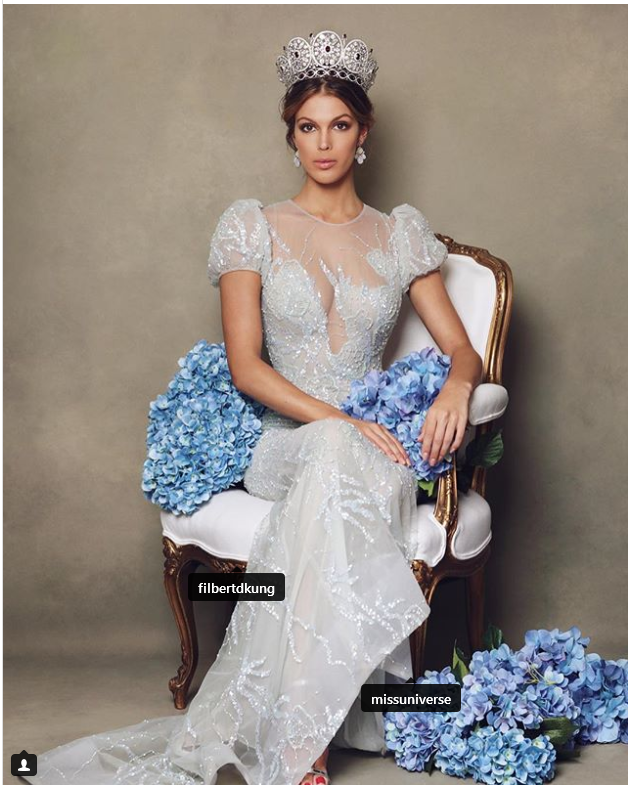
Cô là một người mẫu Pháp, Hoa hậu Pháp 2016 và là Hoa hậu Hoàn vũ 2016.
Iris sở hữu 1 body đẹp nhất trong số các Hoa Hậu Hoàn Vũ từ năm 2015 đến năm 2021. Fan Sắc Đẹp nhận định rằng
cô hội tụ đầy đủ yếu tố để trở thành Hoa Hậu Hoàn Vũ.
Iris mang một nhan sắc đậm chất quý cô nước Pháp.
Cô trở thành người phụ nữ Châu Âu đầu tiền giành được ngôi vị Hoa hậu Hoàn vũ kể từ lần cuối là năm 2002 Oxana Fedorova
của Nga (tuy nhiên sau đó Hoa hậu Hoàn vũ 2002 bị tước vương miện) và cũng là hoa hậu đến từ châu Âu đầu tiên hoàn thành nhiệm kì một năm của mình
kể từ khi Mona Grudt của Na Uy giành được Hoa hậu Hoàn vũ 1990. Cô cũng là người phụ nữ Pháp thứ hai giành được danh hiệu Hoa hậu Hoàn vũ
trước đó là Christine Martel đã giành được ngôi vị Hoa hậu Hoàn vũ 1953
và làm cho khoảng cách giữa hai lần chiến thắng là 63 năm dài nhất trong lịch sử cuộc thi Hoa hậu Hoàn vũ
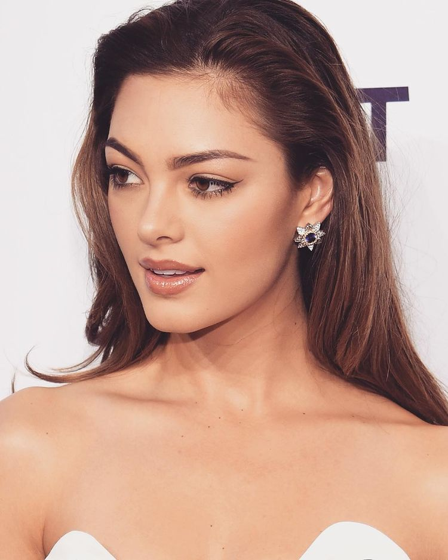 Demi-Leigh Nel-Peters (sinh ngày 28 tháng 6 năm 1995)
Cô là một người mẫu và nữ hoàng sắc đẹp Nam Phi được trao vương miện Hoa hậu Hoàn vũ 2017 cô là Hoa hậu Nam Phi 2017 và là Hoa hậu Hoàn vũ thứ hai đến từ Nam Phi
sau Hoa hậu Hoàn vũ 1978 Margaret Gardiner.
Tại Nam Phi Demi là người mẫu nổi tiếng
Demi sở hữu nhan sắc ngọt ngào, xinh đẹp. Cô được Fan sắc đẹp ưu ái trao cho danh xưng " Hoa Hậu Hoàn Vũ có gương mặt đẹp nhất " trong suốt các năm từ 2015 đến 2021
Ngày 11/01/2019, Nel-Peters đính hôn với bạn trai là vận động viên bóng bầu dục Tim Tebow.
Catriona Elisa Magnayon Gray 6 tháng 1, 1994 (28 tuổi) 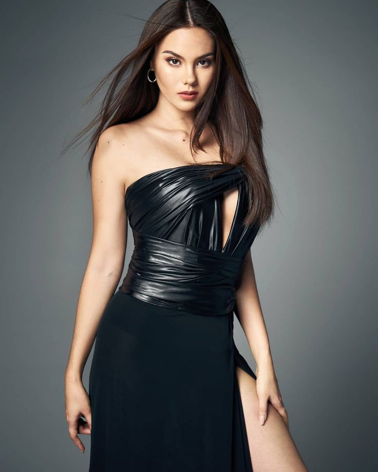
Catriona là con lai 2 dòng màu là Úc và Phillippines. Thuở nhỏ cô sống ở Úc lớn lên thì chuyển đến Phillipines
Cô là MC chương trình truyền hình, ca sĩ, người mẫu
Cat Không chỉ xinh đẹp, tài giỏi và đa tài trong rất nhiều lĩnh vực, Catriona Gray còn khiến mọi người vô cùng
ngưỡng mộ khi phát hiện ra cô là Thạc sĩ ngành nhạc lý của một học viện âm nhạc vô cùng nổi tiếng trên thế giới Học viện âm nhạc Berklee (Boston, Mỹ).
Người đẹp từng đại diện Phillipines đến với cuộc thi nhan sắc lớn nhất thế giới là Miss World và đạt thành tích top 5 chung cuộc vào năm 2016
2018 Catriona dự thi Hoa Hậu Hoàn Vũ Phillipines và xuất sắc dành được vương miện cao quý.
Cũng như 1 lần nữa đại diện quốc gia dự thi cuộc thi nhan sắc thế giới - Miss Universe và lại 1 lần nữa chiên thắng.
Catriona Gray là Hoa Hậu có kĩ năng trình diễn sân khấu đỉnh cao nhất trong lịch sử Hoa Hậu Hoàn Vũ Thế Giới.
Cô toát lên thần thái sang trọng, cuốn hút. Những bước catwalk uyển chuyển cũng như những cú xoay slomotion đầy chuyên nghiệp.
Cat là Hoa Hậu Hoàn Vũ tôi yêu thích nhất bởi thần thái, năng lượng và câu nói truyền cảm hứng.
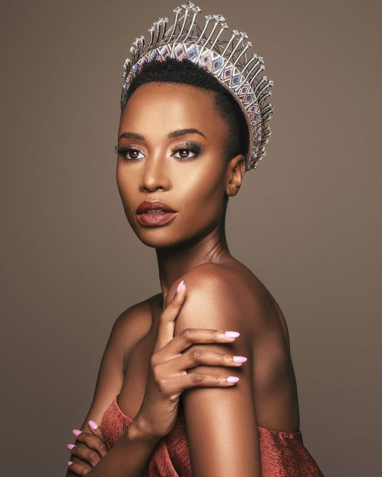 Zozibini Tunzi (sinh ngày 18 tháng 9 năm 1993)
Zozi là người mẫu nổi tiếng tại Nam Phi
Cô đăng quang Hoa Hậu Hoàn Vũ Nam Phi 2019 và đại diện cho đất nước đến với Miss Universe 2019.
Zozibini nổi bật đặc biệt bởi cô là Hoa Hậu Hoàn Vũ đầu tiên đăng quang với mái tóc tém và nước da màu.
Cô là người phụ nữ thứ ba đến từ Nam Phi giành được danh hiệu, và là người phụ nữ da đen đầu tiên kể từ khi Leila Lopes đăng quang Hoa hậu Hoàn vũ 2011.
Trong phần thi cuối, Tunzi được hỏi về những gì cô tin rằng các cô gái trẻ ngày nay nên được dạy điều gì nhiều nhất, cô tự tin trả lời rằng đó là
sự lãnh đạo và do xã hội nên ngày nay họ đang tránh các vị trí của nhà lãnh đạo. "Tôi nghĩ việc quan trọng nhất chúng ta nên dạy cho các bé gái ngày nay là
tinh thần lãnh đạo. Đó là điều mà các cô gái trẻ và những người phụ nữ thiếu hụt trong suốt thời gian dài. Điều đó không phải vì chúng ta không muốn, mà
bởi vì những định kiến xã hội thường áp đặt lên phụ nữ. Tôi nghĩ rằng phụ nữ là những người mạnh mẽ nhất trên thế giới. Phụ nữ nên được trao tất cả cơ hội
họ xứng đáng có. Và điều chúng ta cần dạy cho các bé gái là giành được vị trí của mình trong xã hội. Không có điều gì quan trọng hơn là chính bản thân mình
và có được vị trí riêng trong xã hội."
Năm 2019 Đại diện đến từ Puerto Rico được đánh giá cao và sẽ trở thành Hoa Hậu đương nhiệm kế tiếp. Bởi vóc dáng, trí tuệ và nhan sắc của cô ấy gần như chinh phục
mọi người. Nhưng Zozi đã tạo ra lịch sử khi cô ấy bước vào phần thi ứng xử. Fan sắc đẹp gọi Zozi là Hoa Hậu Hoàn Vũ tốt nhất phần ứng xử.
Zozi là hoa hậu kém sắc nhất nhưng cô ấy là Hoa Hậu rất truyền cảm hứng nhất. Và khi cô ấy cầm mic thì chắc chắn mọi người buộc phải lắng nghe và theo dõi những
ngôn từ của cô ấy.
Alma Andrea Meza Carmona (sinh ngày 13 tháng 8 năm 1994) 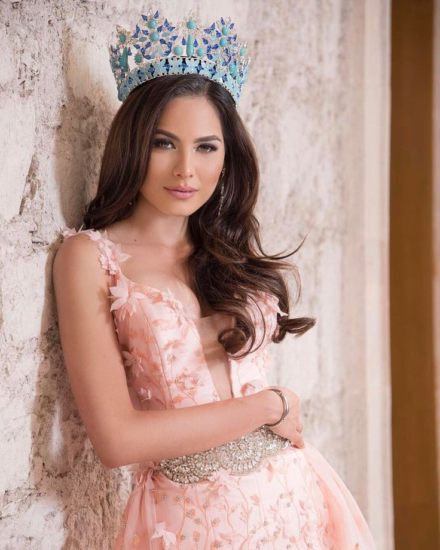
Andrea là người mẫu và hoa hậu người Mexico.
Năm 2017 cô đại diện cho Mexico tham dự Miss World và trở thành Á Hậu 1 .Năm 2020 cô tham dự Hoa Hậu Hoàn Vũ Mexico và chiến thắng. Andrea tiếp tục đại diện
cho quê hương đến với cuộc thi nhan sắc lớn thứ 2 trên toàn thế giới là Miss Universe.
Lần này cô đã giành được ngôi vị cao quý nhất. Và có 1 nhiệm kỳ đầy xuất sắc và thành công.
Sau khi đăng quang Miss Universe cô có rất nhiều lời mời hợp tác đến từ nhiều nhãn hàng lớn trên thế giới. Cũng như tham dự vô vàn những show diễn thời trang.
Andrea đã kéo doanh thu của tổ chức Miss Universe lên 1 con số đáng kinh ngạc sau 2 năm liên tiếp tụt
dốc.
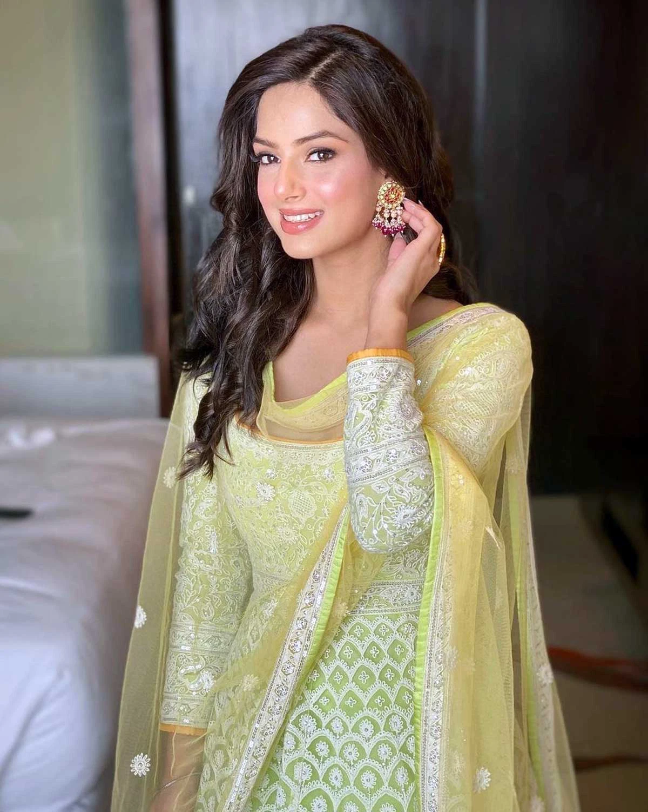 Harnaaz Kaur Sandhu Harnaaz Kaur Sandhu (sinh ngày 3 tháng 3 năm 2000)
Harnazz là một người mẫu, hoa hậu người Ấn Độ. Cô được trao ngôi vị Hoa hậu Hoàn vũ 2021, trước đó cô là Miss Diva 2021.
Pia Wurtzbach (sinh ngày 24 tháng 9 năm 1989)
Cô là nữ người mẫu, diễn viên nổi tiếng tại Philippines. Ngoài ra Pia còn đảm nhận vai trò MC
và là chuyên gia trang điểm.
Cô là con lai 2 dòng máu là Phillippines và Đức
Pia đã thi Hoa Hậu Hoàn Vũ Phillippines liên tiếp trong 3 năm để có cơ hội đại diện quốc gia dự thi quốc tế. May mắn đã mỉm cười với cô khi lần thứ 4 tham dự cuộc thi nhan sắc cô
cô đã xuất sắc trở thành Hoa Hậu Hoàn Vũ Thế Giới 2015
Cô được mệnh danh là Hoa Hậu có phần ứng xử trôi chảy, ngọt ngào nhất.
Có 1 sự cố đã xảy ra gây chấn động truyền thông thế giới rằng MC công bố hoa hậu Colombia là Ariadna Gutierrez đã trở thành tân hoa hậu Hoàn vũ thế giới 2015
nhưng chỉ sau đó đã khẳng định đây là một sai sót. Tân hoa hậu thực sự của cuộc thi năm nay là hoa hậu Philippines. Sau đó mọi người đều đùa vui rằng Pia Wurtzbach
là hoa hậu nổi tiếng nhất của Miss Universe.
Iris Mittenaere (sinh ngày 25 tháng 1 năm 1993) 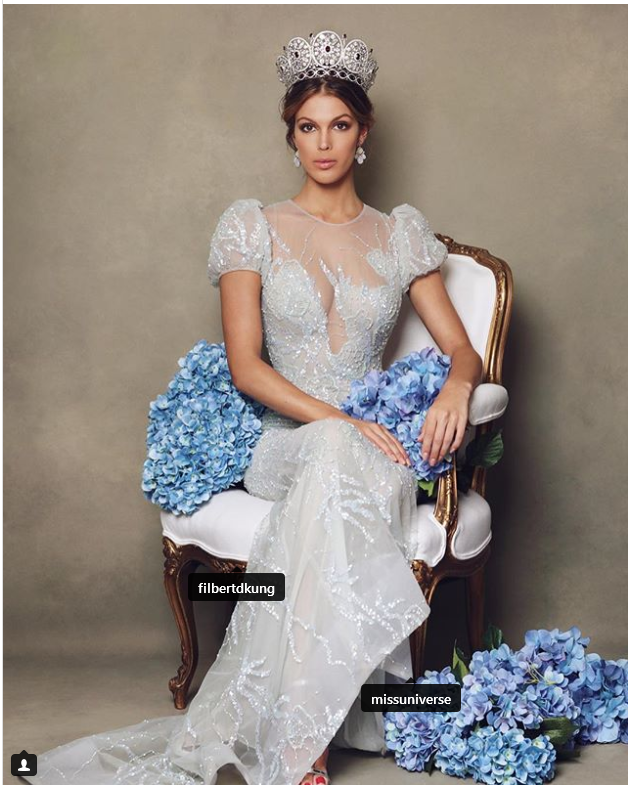
Cô là một người mẫu Pháp, Hoa hậu Pháp 2016 và là Hoa hậu Hoàn vũ 2016.
Iris sở hữu 1 body đẹp nhất trong số các Hoa Hậu Hoàn Vũ từ năm 2015 đến năm 2021. Fan Sắc Đẹp nhận định rằng
cô hội tụ đầy đủ yếu tố để trở thành Hoa Hậu Hoàn Vũ.
Iris mang một nhan sắc đậm chất quý cô nước Pháp.
Cô trở thành người phụ nữ Châu Âu đầu tiền giành được ngôi vị Hoa hậu Hoàn vũ kể từ lần cuối là năm 2002 Oxana Fedorova
của Nga (tuy nhiên sau đó Hoa hậu Hoàn vũ 2002 bị tước vương miện) và cũng là hoa hậu đến từ châu Âu đầu tiên hoàn thành nhiệm kì một năm của mình
kể từ khi Mona Grudt của Na Uy giành được Hoa hậu Hoàn vũ 1990. Cô cũng là người phụ nữ Pháp thứ hai giành được danh hiệu Hoa hậu Hoàn vũ
trước đó là Christine Martel đã giành được ngôi vị Hoa hậu Hoàn vũ 1953
và làm cho khoảng cách giữa hai lần chiến thắng là 63 năm dài nhất trong lịch sử cuộc thi Hoa hậu Hoàn vũ
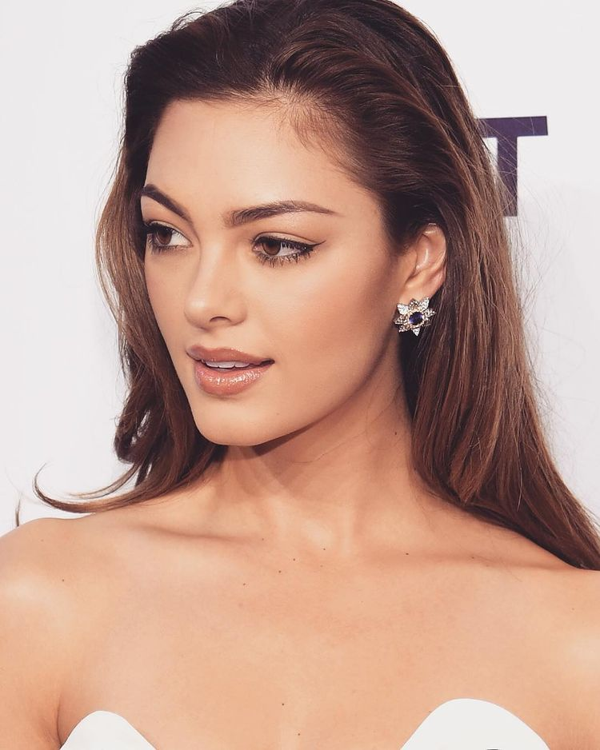 Demi-Leigh Nel-Peters (sinh ngày 28 tháng 6 năm 1995)
Cô là một người mẫu và nữ hoàng sắc đẹp Nam Phi được trao vương miện Hoa hậu Hoàn vũ 2017 cô là Hoa hậu Nam Phi 2017 và là Hoa hậu Hoàn vũ thứ hai đến từ Nam Phi
sau Hoa hậu Hoàn vũ 1978 Margaret Gardiner.
Tại Nam Phi Demi là người mẫu nổi tiếng
Demi sở hữu nhan sắc ngọt ngào, xinh đẹp. Cô được Fan sắc đẹp ưu ái trao cho danh xưng " Hoa Hậu Hoàn Vũ có gương mặt đẹp nhất " trong suốt các năm từ 2015 đến 2021
Ngày 11/01/2019, Nel-Peters đính hôn với bạn trai là vận động viên bóng bầu dục Tim Tebow.
Catriona Elisa Magnayon Gray 6 tháng 1, 1994 (28 tuổi) 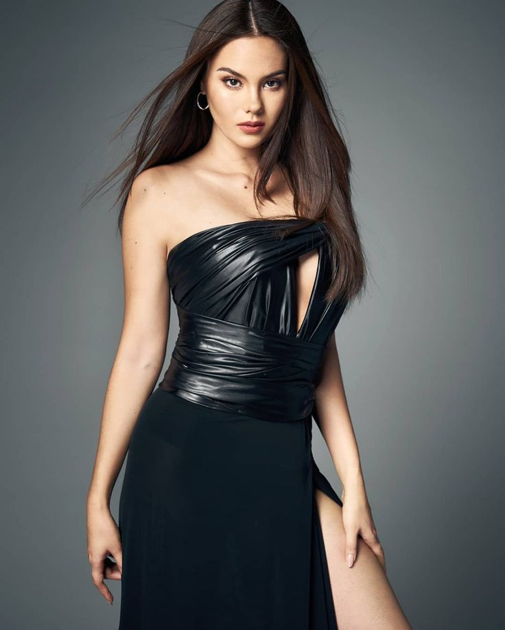
Catriona là con lai 2 dòng màu là Úc và Phillippines. Thuở nhỏ cô sống ở Úc lớn lên thì chuyển đến Phillipines
Cô là MC chương trình truyền hình, ca sĩ, người mẫu
Cat Không chỉ xinh đẹp, tài giỏi và đa tài trong rất nhiều lĩnh vực, Catriona Gray còn khiến mọi người vô cùng
ngưỡng mộ khi phát hiện ra cô là Thạc sĩ ngành nhạc lý của một học viện âm nhạc vô cùng nổi tiếng trên thế giới Học viện âm nhạc Berklee (Boston, Mỹ).
Người đẹp từng đại diện Phillipines đến với cuộc thi nhan sắc lớn nhất thế giới là Miss World và đạt thành tích top 5 chung cuộc vào năm 2016
2018 Catriona dự thi Hoa Hậu Hoàn Vũ Phillipines và xuất sắc dành được vương miện cao quý.
Cũng như 1 lần nữa đại diện quốc gia dự thi cuộc thi nhan sắc thế giới - Miss Universe và lại 1 lần nữa chiên thắng.
Catriona Gray là Hoa Hậu có kĩ năng trình diễn sân khấu đỉnh cao nhất trong lịch sử Hoa Hậu Hoàn Vũ Thế Giới.
Cô toát lên thần thái sang trọng, cuốn hút. Những bước catwalk uyển chuyển cũng như những cú xoay slomotion đầy chuyên nghiệp.
Cat là Hoa Hậu Hoàn Vũ tôi yêu thích nhất bởi thần thái, năng lượng và câu nói truyền cảm hứng.
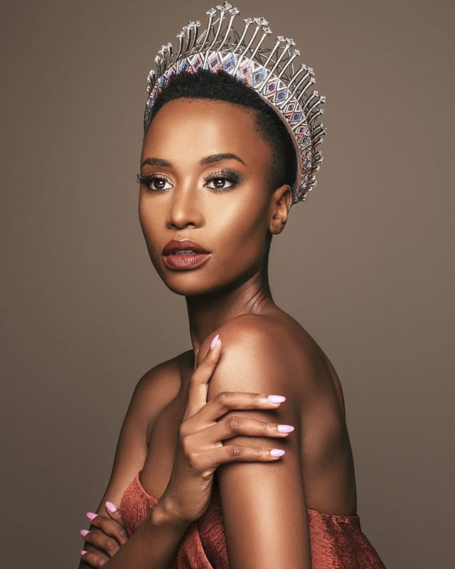 Zozibini Tunzi (sinh ngày 18 tháng 9 năm 1993)
Zozi là người mẫu nổi tiếng tại Nam Phi
Cô đăng quang Hoa Hậu Hoàn Vũ Nam Phi 2019 và đại diện cho đất nước đến với Miss Universe 2019.
Zozibini nổi bật đặc biệt bởi cô là Hoa Hậu Hoàn Vũ đầu tiên đăng quang với mái tóc tém và nước da màu.
Cô là người phụ nữ thứ ba đến từ Nam Phi giành được danh hiệu, và là người phụ nữ da đen đầu tiên kể từ khi Leila Lopes đăng quang Hoa hậu Hoàn vũ 2011.
Trong phần thi cuối, Tunzi được hỏi về những gì cô tin rằng các cô gái trẻ ngày nay nên được dạy điều gì nhiều nhất, cô tự tin trả lời rằng đó là
sự lãnh đạo và do xã hội nên ngày nay họ đang tránh các vị trí của nhà lãnh đạo. "Tôi nghĩ việc quan trọng nhất chúng ta nên dạy cho các bé gái ngày nay là
tinh thần lãnh đạo. Đó là điều mà các cô gái trẻ và những người phụ nữ thiếu hụt trong suốt thời gian dài. Điều đó không phải vì chúng ta không muốn, mà
bởi vì những định kiến xã hội thường áp đặt lên phụ nữ. Tôi nghĩ rằng phụ nữ là những người mạnh mẽ nhất trên thế giới. Phụ nữ nên được trao tất cả cơ hội
họ xứng đáng có. Và điều chúng ta cần dạy cho các bé gái là giành được vị trí của mình trong xã hội. Không có điều gì quan trọng hơn là chính bản thân mình
và có được vị trí riêng trong xã hội."
Năm 2019 Đại diện đến từ Puerto Rico được đánh giá cao và sẽ trở thành Hoa Hậu đương nhiệm kế tiếp. Bởi vóc dáng, trí tuệ và nhan sắc của cô ấy gần như chinh phục
mọi người. Nhưng Zozi đã tạo ra lịch sử khi cô ấy bước vào phần thi ứng xử. Fan sắc đẹp gọi Zozi là Hoa Hậu Hoàn Vũ tốt nhất phần ứng xử.
Zozi là hoa hậu kém sắc nhất nhưng cô ấy là Hoa Hậu rất truyền cảm hứng nhất. Và khi cô ấy cầm mic thì chắc chắn mọi người buộc phải lắng nghe và theo dõi những
ngôn từ của cô ấy.
Alma Andrea Meza Carmona (sinh ngày 13 tháng 8 năm 1994) 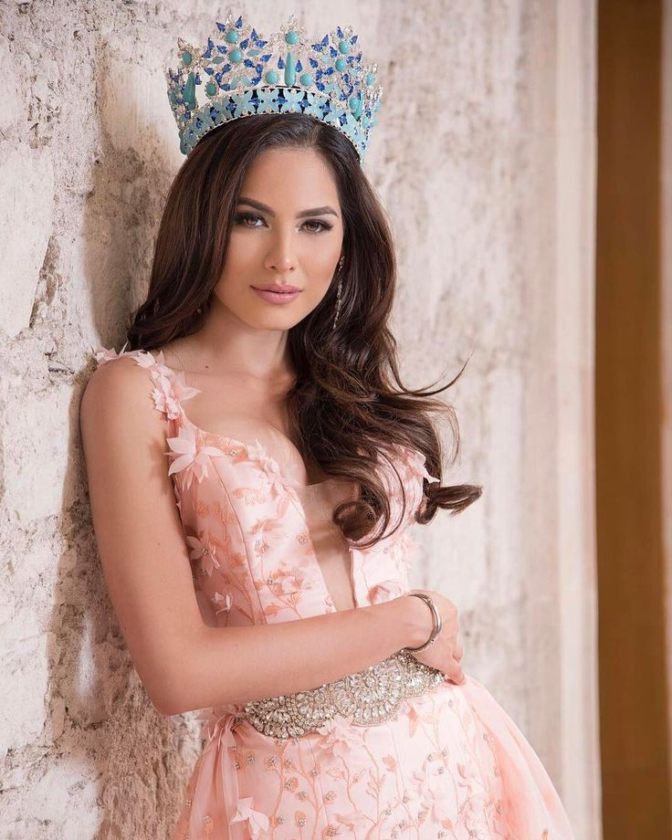
Andrea là người mẫu và hoa hậu người Mexico.
Năm 2017 cô đại diện cho Mexico tham dự Miss World và trở thành Á Hậu 1 .Năm 2020 cô tham dự Hoa Hậu Hoàn Vũ Mexico và chiến thắng. Andrea tiếp tục đại diện
cho quê hương đến với cuộc thi nhan sắc lớn thứ 2 trên toàn thế giới là Miss Universe.
Lần này cô đã giành được ngôi vị cao quý nhất. Và có 1 nhiệm kỳ đầy xuất sắc và thành công.
Sau khi đăng quang Miss Universe cô có rất nhiều lời mời hợp tác đến từ nhiều nhãn hàng lớn trên thế giới. Cũng như tham dự vô vàn những show diễn thời trang.
Andrea đã kéo doanh thu của tổ chức Miss Universe lên 1 con số đáng kinh ngạc sau 2 năm liên tiếp tụt
dốc.
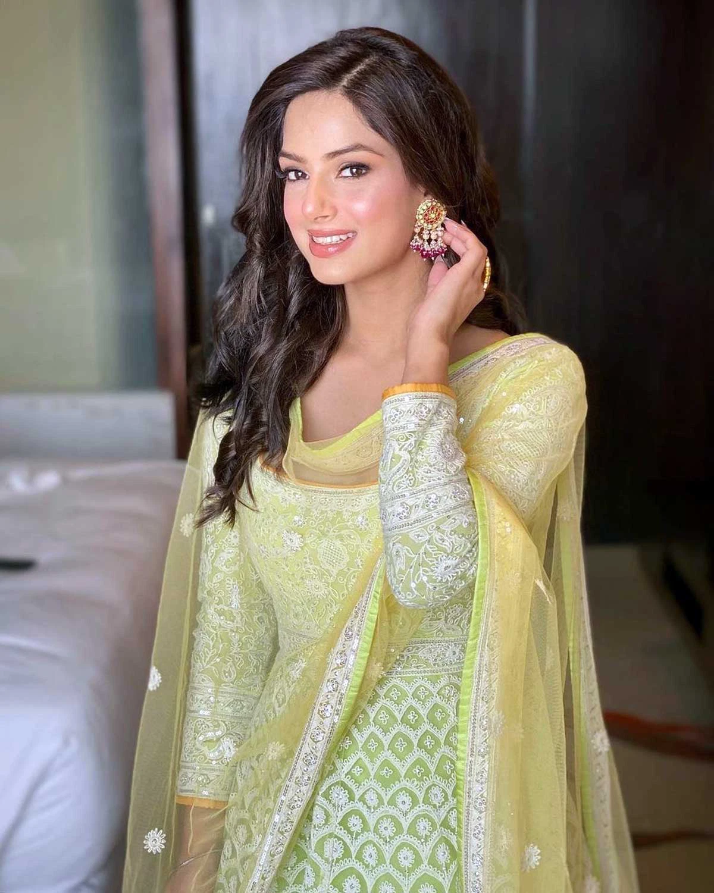 Harnaaz Kaur Sandhu Harnaaz Kaur Sandhu (sinh ngày 3 tháng 3 năm 2000)
Harnazz là một người mẫu, hoa hậu người Ấn Độ. Cô được trao ngôi vị Hoa hậu Hoàn vũ 2021, trước đó cô là Miss Diva 2021.